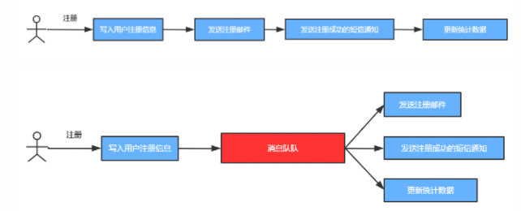
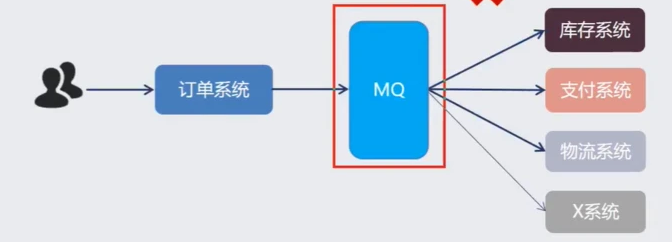
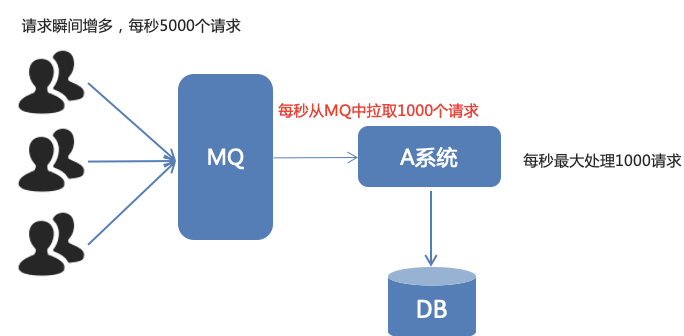
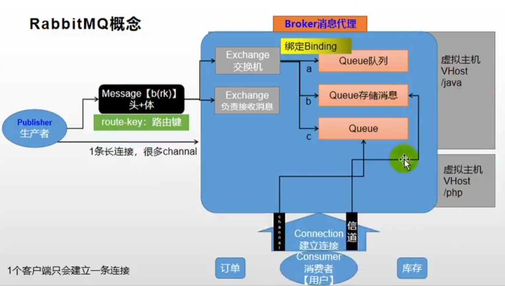
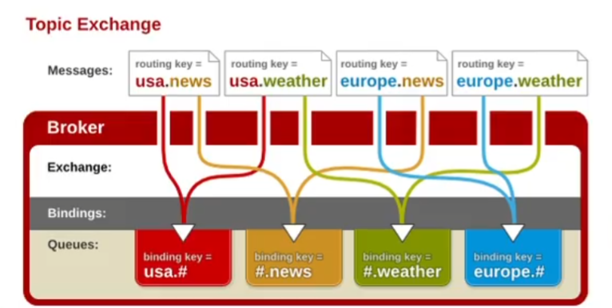
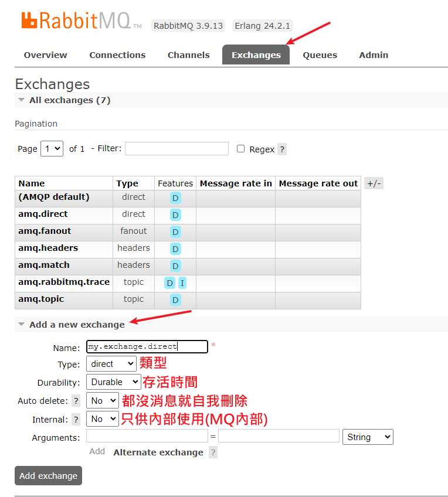
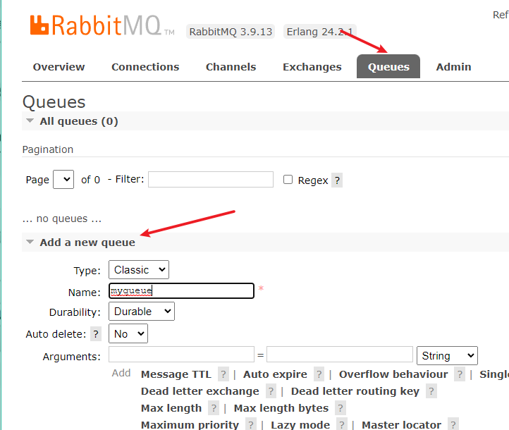
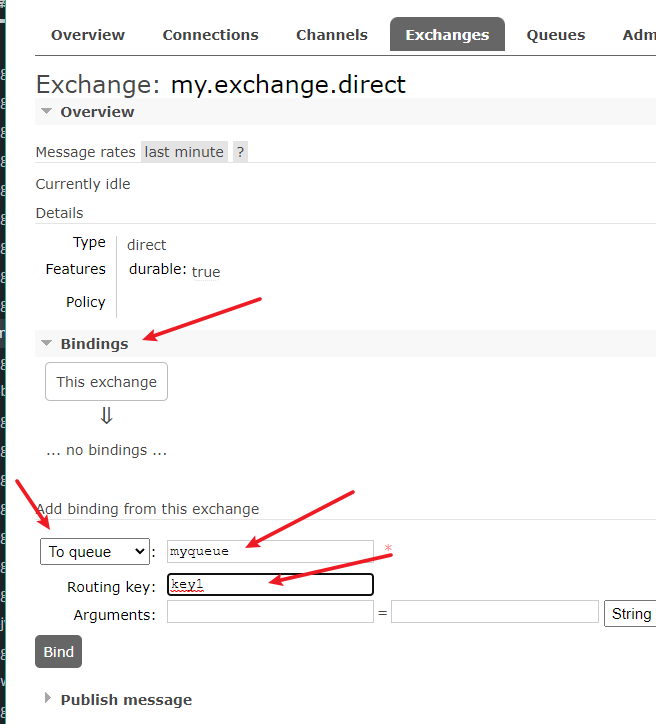
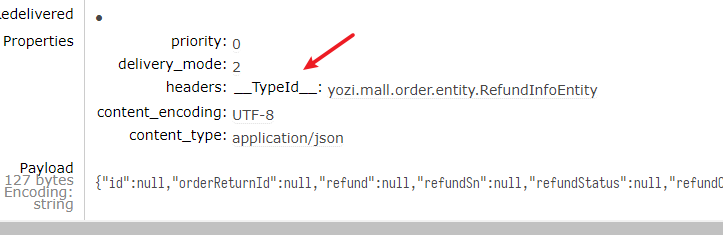
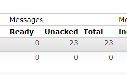

Message Queue
Message queue 訊息佇列
- 佇列（queue），又稱為隊列，特性是先進先出(FIFO)
- 訊息佇列是一個中間件，又是經典的"加一層"操作，抽出一個專門存放溝通訊息的地方，就是訊息佇列
- 可以理解成去銀行辦事，那個領號碼牌的機器
- 市面上常見的MQ: ActiveMQ、RabbitMQ、RocketMQ、Kafka
目的
- 縮短調用時間: 透過序列分發後續的異步調用，不需要一步一步往下走等返回
- 就像去醫院，醫生開了檢查要你去抽血跟照X光，哪邊方便就先去做，總之檢查單開了醫生就不管了，你總會去做完檢查

- 解耦: 模組間溝通用訂閱佇列的形式，只需要關注收發訊息，減少業務邏輯的侵入
- 比如到了抽血站，拿檢驗單去掃機器就能完成抽血報名，不需要醫生打電話告知抽血站誰要抽什麼血

- 削峰: 流量控制，錯開高併發，依順序處理
- 隊列是有序、可控制流量的，不會突然1000人擠爆抽血站

名詞
-
消息代理（message broker）: 安裝了消息中間件的伺服器，發送消息和接收消息都要連上它
- 冒險者公會的任務看板
-
目的地（destination）: 目的地表示生產者發送消息給消息代理之後，是存儲到消息代理中哪一個具體的目的地（隊列或主題）
-
隊列（queue）：點對點通信，1個發送者，n個接受者，但一個信息只會被一個接受者消費（消費後移出隊列）
- 理解為拋繡球
-
主題（topic）：發佈/訂閲，多個發送者+多個訂閲者。多個訂閲者會同時接收到
- 廣播
-
-
JMS (Java Message Service): 基於JAVA API定義的標準介面
-
類似JDBC與資料庫廠商之間的關係
-
ActiveMQ、HornetMQ是JMS實現
-
參考 https://openhome.cc/Gossip/EJB3Gossip/JavaMessageService.html
-
-
AMQP(Advanced Message Queuing Protocol)
- 高級消息隊列協議，也是一個消息代理的規範，兼容JMS
- RabbitMQ是AMQP的實現
-
不管JMS或AMQP，Spring都有提供支持，只要實現ConnectionFactory來連接消息代理，Spring Boot也都有自動配置
- Spring真的是無敵，一統Java江湖
RabbitMQ
這一Part講的超清晰，講的太好了 https://www.bilibili.com/video/BV1np4y1C7Yf?p=250&spm_id_from=pageDriver

- publisher發送message
- message由消息頭 + 消息體組成(類似HTTP)，發送到Message Broker消息代理伺服器上
- 在Broker中，Exchange交換機綁定Queue，並識別route key(消息要去哪)
- 消費者訂閱隊列，建立一條Connection長連接(連接上開闢有多條channel信道)
- 類似高速公路有6車道那樣
- 長連接能監聽消費者是否斷開，如果斷開了就回收消息，不至於丟失
- 在Broker中，Exchange與Queue可以組成VHost虛擬主機，類似命名空間互相隔離，可以用來區分不同平台或是dev與pub
啟用
docker run -d --name rabbitmq --restart=always -p 5671:5671 -p 5672:5672 -p 4369:4369 -p 25672:25672 -p 15671:15671 -p 15672:15672 rabbitmq:management
-
這是章魚不是兔子吧，這麼多端口
- 4369,25672(Erlang發現&集群端口)
- 5672,5671(AMQP端口)
- 15672(web管理後台端口)
- 61613,61614(STOMP協議端口)
- 1883,8883(MQTT協議端口)
-
管理頁面: http://localhost:15672
- 預設帳號密碼都是
guest
- 預設帳號密碼都是
Exchange類型
-
direct: 直接類型，按照路由鍵精確一對一匹配
-
fanout: 廣播類型，有綁定就發，無論路由鍵，最快
-
topic: 主題類型，用類似通配符的規則匹配
*: 必須有一個單詞
#: 0個或多個單詞

自訂Exchange
- 命名最好在尾部帶上類型

- 接著給交換機綁定隊列，綁定之前，要先有隊列，這邊創

- 接著綁定
- 交換機也可以綁交換機，形成多層次關係
- 記得指定route key

整合Spring
前置
- 引包
<dependency>
<groupId>org.springframework.boot</groupId>
<artifactId>spring-boot-starter-amqp</artifactId>
</dependency>
- application.properties
# MQ
spring.rabbitmq.host=localhost
spring.rabbitmq.port=5672
spring.rabbitmq.virtual-host=/
- 啟動類註解
@EnableRabbit
@EnableRabbit註解使RabbitAutoConfiguration生效，自動配置了:
RabbitTemplate
AmqpAdmin
CachingConnectionFactory
RabbitMessagingTemplate
測試創建
- 創建Exchanger、Queue、Binding這些參數與邏輯都跟在網頁上操作一樣
- 先注入一個
AmqpAdmin，由它declare完成創建
@Slf4j
@SpringBootTest
class OrderApplicationTests {
@Autowired
AmqpAdmin amqpAdmin;
@Test
void createExchange() {
// 名稱, 持久, 自動刪
DirectExchange directExchange = new DirectExchange("hello-exchange", true, false);
amqpAdmin.declareExchange(directExchange);
log.info("Exchange[{}]創建成功", "hello-exchange");
}
@Test
void createQueue() {
// import org.springframework.amqp.core.Queue;
// 第三個參數 排他，若true表示隊列只能被聲明的連接綁定，其他人綁不上
amqpAdmin.declareQueue(new Queue("hello-queue", true, false, false));
log.info("Queue創建[{}]成功", "hello-queue");
}
@Test
void createBinding() {
// String destination目的地，隊列name或 交換機name
// Binding.DestinationType destinationType目的地類型 queue還是exchange
// String exchange 交換機
// String routingKey 路由鍵
// @Nullable Map<String, Object> arguments 自定義參數
amqpAdmin.declareBinding(new Binding("hello-queue", Binding.DestinationType.QUEUE,"hello-exchange",
"hello.java", null));
log.info("Binding創建[{}]成功", "hello-binding");
}
}
發訊息
- 注入
RabbitTemplate，使用convertAndSend方法- 能接收Object，直接轉成流發出去
- 若想生發一個物件，該物件的類要實現序列化
implments Serializable
@Autowired
RabbitTemplate rabbitTemplate;
@Test
void send() {
String msg = "一條訊息";
rabbitTemplate.convertAndSend("hello-exchange", "hello.java", msg);
}
- 實務上還是轉JSON吧，需要一個配置類
- 注意引的包是
amqp.support.converter
- 注意引的包是
import org.springframework.amqp.support.converter.MessageConverter;
@Configuration
public class MyRabbitConfig {
@Bean
public MessageConverter messageConverter() {
return new Jackson2JsonMessageConverter();
}
}
- 發送一個自訂類RefundInfoEntity
@Test
void send() {
for (int i = 0; i < 5; i++) {
RefundInfoEntity refundInfoEntity = new RefundInfoEntity();
refundInfoEntity.setRefundContent("test" + i);
rabbitTemplate.convertAndSend("hello-exchange", "hello.java", refundInfoEntity);
}
}
接收訊息
-
必須先在啟動類
@EnableRabbit，接著在要收訊息的方法或類上註解@RabbitListener(queues={"hello-queue"})- 注意監聽的是一個queue
-
當有註解了接收的方法或類，只要服務一啟動就會連上消息中心，開始嘗試接收
-
最原始的接收，收到的是Message類
org.springframework.amqp.core.Message- 用getBosy方法拿出流化的物件
@RabbitListener(queues = {"hello-queue"})
void receiveMsg(Message message) {
byte[] body = message.getBody();
MessageProperties messageProperties = message.getMessageProperties();
System.out.println(body);
System.out.println("訊息頭=" + messageProperties);
}
- 可以把body取出來，然後從頭的資訊中找
__TypeId__確定類，再自己JSON.parse回去成為一個物件

- 但其實在方法的入參聲明類就可以直接取到反射包好的物件了
@RabbitListener(queues = {"hello-queue"})
void receiveMsg(RefundInfoEntity content,
Channel channel) {
System.out.println(content);
}
@RabbitListener可以用在類或方法，還有一個@RabbitHandler只能用在方法上，可以細分處理不同的訊息- 例如一個queue中有多種訊息，A類去方法1，B類去方法2
@RabbitHandler
void 方法1(A類 a){...}
@RabbitHandler
void 方法2(B類 b){...}
訊息確認
- 保證消息不丟失，可以使用事務包住整條傳遞序列，但性能下降250倍

- 用分段確認機制就不會那麼嚴重損失性能
第一段P>B
- publisher confirmCallback: 告訴你訊息有送進訊息中心
- application.properties
# 開啓發送確認，確定有送到Broker
spring.rabbitmq.publisher-confirm-type=correlated
- 可以自訂RabbitTemplate中的confirm方法
- MyRabbitConfig.java
@Autowired
RabbitTemplate rabbitTemplate;
@PostConstruct // RabbitTemplate物件創建之後執行此方法
public void initRabbitTemplate() {
rabbitTemplate.setConfirmCallback(new RabbitTemplate.ConfirmCallback() {
/**
* 訊息有送到訊息中心就執行此方法
* @param correlationData 消息的唯一關聯數據，可以視為消息id
* @param b 是否送達
* @param s 失敗原因
*/
@Override
public void confirm(CorrelationData correlationData, boolean b, String s) {
System.out.println("訊息"+correlationData+"已送達中心");
}
});
}
第二段E>Q
-
publisher returnCallback: 告訴你訊息在交換機要去隊列時出事了
-
application.properties
# 開啓發送確認，確定經過交換機抵達Queue
spring.rabbitmq.publisher-returns=true
# 只要抵達Queue，用異步模式優先回調return confirm
spring.rabbitmq.template.mandatory=true
- MyRabbitConfig.java
- 注意這是如果沒進隊列時，調用的方法
- 前面P>B是送進中心的已讀，這邊是E>Q出事的警報
rabbitTemplate.setReturnCallback(new RabbitTemplate.ReturnCallback() {
@Override
public void returnedMessage(Message message, int i, String s, String s1, String s2) {
// 如果沒有到queue，要返回這些訊息
}
});
第三段 消費端
-
消費端確認機制: 消費者收到消息，給伺服器發送確認，伺服器刪除該消息
-
consumer ack: 讓Broker知道哪些消息被消費者正確消費了（如果沒有則重新投遞）
- 預設是auto，客户端只要接收到消息就會自動確認，服務端就移除這個消息
- 會造成問題，比如某模組一接到消息，還在處理就當機了，結果就造成丟失
-
開啟手動確認，設定application.properties
# 使用手動確認模式，關閉自動確認，防止消息丟失 spring.rabbitmq.listener.simple.acknowledge-mode=manual -
處理一個完才確認一個，沒處理完保持在未簽收(Unacked)狀態，若當機則會使消息重新進入ready狀態，不會丟失

簽收
- 使用
channel.basicAck(deliveryTag, false)
@RabbitListener(queues = {"hello-queue"})
void receiveMsg(Message message,
RefundInfoEntity content,
Channel channel) {
System.out.println(content);
// deliveryTag在channel內按順序自增
long deliveryTag = message.getMessageProperties().getDeliveryTag();
// 手動簽收，後面的false = 非批量模式
try {
channel.basicAck(deliveryTag, false);
System.out.println("簽收，單據流水號=" + deliveryTag);
} catch (IOException e) {
// 簽收失敗，例如網路異常
e.printStackTrace();
}
}
拒收
// 拒收，參數是: 流水號, 批次, 重新入隊列
channel.basicNack(deliveryTag, false, false); // 這樣會丟棄
// 重新入隊列=true的話，訊息會重新回到隊列
channel.basicNack(deliveryTag, false, true);
// 等同於
channel.basicReject(deliveryTag, false);
最終方案
-
確認機制 + 本地事務表
- 發送消息的時候生成消息ID，然後在回調方法修改數據庫中消息的狀態
- 定時掃描數據庫消息的狀態，沒有成功的重新投遞一次
- 消費消息時使用手動簽收機制(不使用自動簽收)
上次修改於 2022-02-04